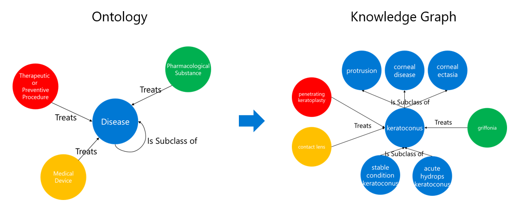

Type in the keywords "keratoconus treatment" and toggle the "KG Enabled" button to see how related terms are incorporated in the search result.
To compare the result without Knowledge Graph, simply turn "KG Enabled" button off and search the same keywords.
Below illustrates the entities and relationship captured by the current Knowledge Graph. The search for "keratoconus" will be
expanded to its child and parent classes.
